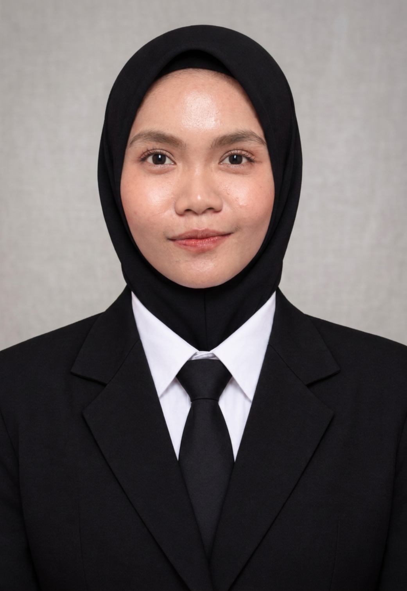
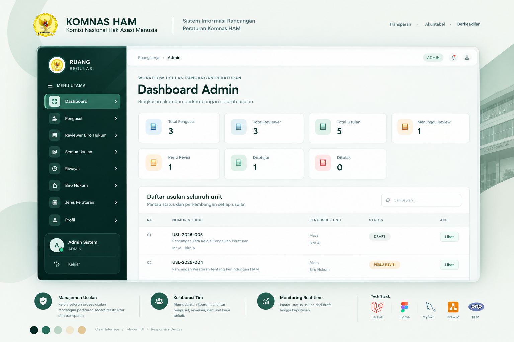
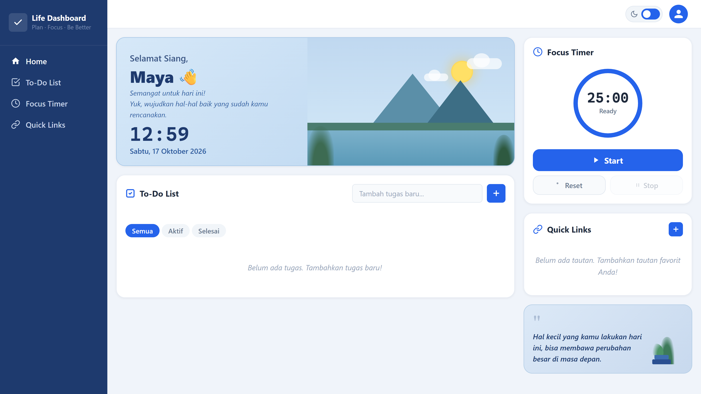

Web Development
Membangun dan menyusun antarmuka serta sistem berbasis web.
Halo, saya
Lulusan Sistem Informasi yang tertarik membangun pengalaman web yang bermanfaat dan memastikan fitur aplikasi berjalan sesuai kebutuhan.

01 / ABOUT ME
Saya memiliki latar belakang Sistem Informasi dan ketertarikan pada pengembangan aplikasi web serta kualitas perangkat lunak.
Melalui proyek akademik dan pengalaman magang, saya belajar memahami kebutuhan pengguna, menyusun antarmuka, serta mengembangkan sistem informasi. Saya juga sedang memperdalam dasar-dasar software testing agar dapat menilai fitur secara lebih terstruktur.
02 / WHAT I WORK WITH
Teknologi yang pernah digunakan dalam pembelajaran dan proyek. Saya terus mengembangkan kemampuan melalui praktik.
Membangun dan menyusun antarmuka serta sistem berbasis web.
Fokus pembelajaran saat ini: pemeriksaan fitur dan dasar pengujian perangkat lunak.
↗ Sedang memperdalam test case, bug report, dan metode black-box testing.
Mendukung proses perancangan dan pengelolaan informasi aplikasi.
ⓘ Daftar ini menunjukkan teknologi dan area yang pernah digunakan atau sedang dipelajari, bukan klaim tingkat kemahiran profesional.
03 / SELECTED WORK
Beberapa proyek akademik dan pengalaman magang yang menggambarkan proses belajar saya.

Perancangan dan implementasi sistem informasi perpustakaan berbasis web menggunakan metode Agile untuk membantu efisiensi pengelolaan koleksi dan transaksi. Studi kasus: SMK Budi Mulia Ciledug.

Terlibat dalam proyek sistem usulan rancangan peraturan di Komnas HAM. Proyek ini memberi pengalaman mengenal pengembangan antarmuka aplikasi menggunakan React.

Aplikasi manajemen tugas dan aktivitas harian yang dikembangkan selama mengikuti coding camp. Berfokus pada perancangan antarmuka yang intuitif untuk membantu melacak progres kerja dan produktivitas harian.
Catatan: Visual proyek pada halaman ini merupakan tangkapan layar asli dari antarmuka aplikasi yang dikembangkan. Detail teknis ditulis berdasarkan pengalaman pengembangan terkait.
04 / EDUCATION
Universitas Pamulang
05 / GET IN TOUCH
Saya terbuka untuk peluang entry-level di bidang Web Development, Front-End Development, maupun IT Quality Assurance.
Untuk menghubungi saya, silakan gunakan kontak yang tercantum di CV.